Pathway
This lesson focuses on the meaning, classification of resources and conservation of resources for sustainable living. It also provides an insight to the various economic activities and in particular it deals with the inter relation between the nature and human activities.
கேடறியாக் கெட்ட இடத்தும் வளங்குன்றா
நாடென்ப நாட்டின் தலை. குறள் 736
எந்த வகையிலும் கெடுதலை அறியாமல், ஒருவேளை கெடுதல் ஏற்படினும் அதனை சீர்செய்யுமளவிற்கு வளங்குன்றா நிலையில் உள்ள நாடுதான் நாடுகளிலேயே தலை சிறந்ததாகும்.
Kulalee was lying in her bed to see if her father would enter her room. She wanted her report card to be signed. There was no symptom of coming of her father. She jumped out of her bed and ran to her
mother in the kitchen.
Kulalee: Amma where is Appa?
Amma: Today he has ‘overtime’ and he has left early.
Kulalee: Overtime what is that?
Amma: Working more hours than the actual working hours is called overtime. Your father’s boss wants him to manufacture a few more solar panels because they have some urgent orders.
Kulalee: He should have told me last night. My progress report has to be signed.
Amma: Enough of that. Now go have your bath. I’ll sign your report this time.
Kulalee: Amma, thank you ma. One more question. What does he make the solar panels from?
Amma: Let me explain for you to understand. Silicon, extracted from sand, a natural resource, is used in making PV cells. It converts solar energy into electrical energy.
Kulalee: Natural resource, what do you mean by it?
Amma: All things useful to man is resource. And if it is directly from nature we call it natural resource.
Kulalee: Then what kind of work does father do?
Amma: He is a manufacturer of things by using natural resources.
Kulalee: Can we called the manufactured goods as manmade resources?
Amma: Yes, they are called as manmade resources.
Kulalee: Ok amma. It’s getting late. Let me get ready.
Activity: 1
Circle the words which are not associated for gardening. Soil, Seeds, A piece of Land, Computers, Saplings, Flower Pots, Manure, Textbooks.
Resource is anything that fulfills human needs. When anything is of some use it becomes valuable. All resources have value. The value can be either commercial or non-commercial. Commercial resources have great economic value. (example) Petroleum. The
Non-commercial resources are very abundant in availability (example) Air.
HOTS
Do all the items in your shopping list have commercial value?
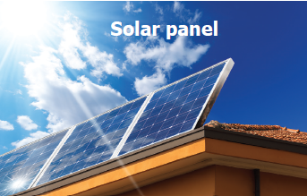
HOTS
Is the tilt of the solar panels same everywhere on Earth?
Resources can be natural, man-made and human resources.
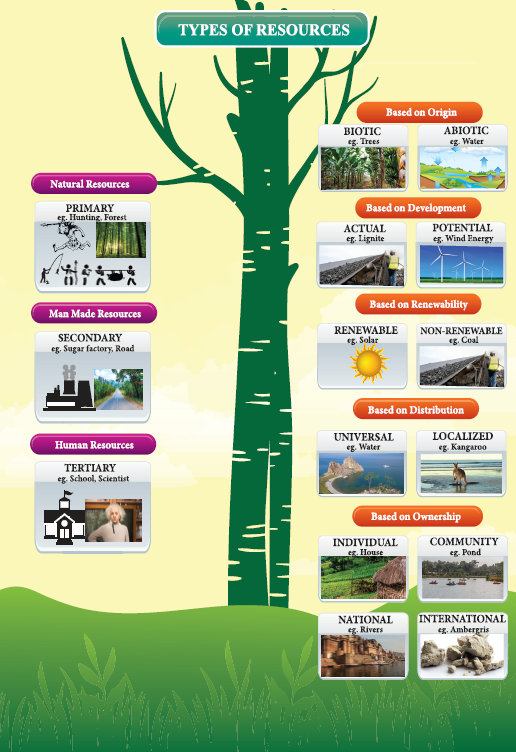
All resources that have been directly provided by nature are called Natural resources. The air, water, soil, minerals, natural vegetation and wild life around us are all-natural resources. The use of any natural resource depends on the place it is available, the form in which it is available and the technology necessary to avail it.
Natural resources can be classified into different groups depending on origin, development, renewability, distribution, ownership etc.
A. ON THE BASIS OF ORIGIN:
On the basis of origin, resources can be classified into biotic and abiotic resources.
one. All living resources are biotic resources, plants, animals and other micro organisms are biotic resources.
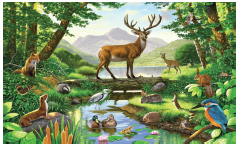
two. Abiotic resources are non-living things. Land, water, air and minerals are abiotic resources.
The biotic resources were mere substances till they were recognized by humans. According to the human needs the substances were collected by the ancient men and preserved for use. In the beginning, man had only three basic needs-food, clothing and shelter. He collected things through primary activities such as hunting, food gathering, fishing and forestry. Later when food became scarce, they had to cultivate and that became agriculture and the cattle were also reared on their farms to fulfill their basic needs.
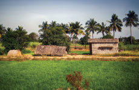
The abiotic resources were also sought after by the early men. They went in search of better landforms where they had enough water resources for agriculture and their cattle. They were inneed of tools right from hunting to agriculture. Primarily the tools were only made of stones. Later man dug the earth for better abiotic resources and found copper first and iron later. He also mined precious metals simultaneously for making ornaments. Later mining became one of the leading primary activities and still holds an important place among the economic activities.
B. ON THE BASIS OF DEVELOPMENT:
Based on the level of development, resources can be divided into actual and potential resources.
One. Actual resources are resources that are being used and the quantity available is known. (example) Coal at Neyveli.
Two. Potential resources are resources that are not being used in the present and its quantity and location are not known. The technology to extract such resources is also yet to be developed. (e.g.) Marine yeast found in the Bay of Bengal and Arabian Sea.
C. ON THE BASIS OF RENEWABILITY:
On the basis of renewability resources can be classified as renewable resources and non-renewable resources.
One. Resources once consumed can be renewed with the passage of time are called renewable resources. (example) Air, Water, Sunlight. Misuse of such resources can also limit its available quantity. So, they have to be used wisely.
Two. The resources which cannot be immediately renewed once they are depleted are called non renewable resources. They become exhausted after use and the time they take to replace does not match the life cycle. Example: Coal, petroleum, natural gas and other minerals.
HOTS
Find out what other resources can renew themselves?
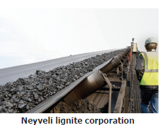
The resources which cannot renew themselves are either scarce or totally absent. So, man is in search of new resources and is conducting several researches. He confirms that a substance is a resource only after research. He tries to harness it and also searches the regions where it may be found in. They are potential resources. Wind energy is one such example. The places where the wind energy can be utilized are still unknown.
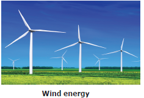
HOTS
How did coal originate?
D. ON THE BASIS OF DISTRIBUTION
On the basis of distribution, resources can be classified into localized resources and universal resources.
One. When resources are present in specific regions they are called localized resources. (example) Minerals.
Two. Some resources are present everywhere Such resources are called universal resources. (example) Sunlight and air.
Activity: 2 Which region or continent does each of these animals belong to?
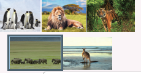
E. ON THE BASIS OF OWNERSHIP
Based on ownership resources can be classified into Individual resources, Community-owned resources, National resources and International resources.
one. Individual resources are resources privately owned by individuals. (example) Farmland.
two. Community-owned resources are resources which can be utilised by all the members of the community. (example) Public parks.
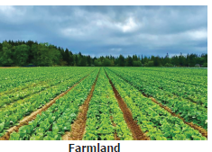
Three. National resources are resources within the political boundaries and oceanic area of a country. (example) Tropical forest regions of India.
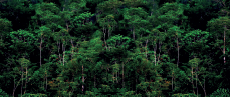
Four. International resources are all oceanic resources found in the open ocean. Resources found in this region can be utilized only after an international agreement. (example) Ambergris.
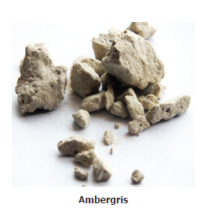
Natural resources are modified or processed by technology into man-made resources. () sugarcane processed to get sugar. All structures built by man can also be called man-made resources. (example) Bridges, Houses, Roads.
This transforming of raw materials into finished goods is called Secondary Activities. Man’s skills and ideas are the basic requirements for these activities.
Activity: 3
What natural resources are necessary to lay a road?
Human resources are groups of individuals who use nature to create more resources. Though human beings are basically natural resources, we classify
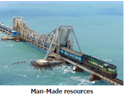
human beings separately. Education health, knowledge and skill have made them a valuable resource. (example) Doctors, Teachers, Scientists. Tertiary activities are basically concerned with the distribution of primary and secondary products through a system of transport and trade (example) Banking, Trade and Communications. The quantity and quality of institutions and organizations involved in making the professionals decide the human resource of a country.
Activity: 4
Identify the personalities and professionals
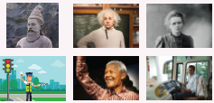
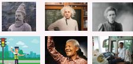
Gandhian thought on Resources
There is enough for everybody’s need and not for anybody’s greed. Mahatma Gandhi blamed human beings for depletion of resources because of
(ONE) over exploitation of resources
(TWO) Unlimited needs of human beings.
So, conservation is very important.
Resource planning And Management
Resource planning is a technique or skill of proper utilization of resources. Resource planning is necessary because
(One) Resources are limited, their planning is quite necessary so that we can use them properly and at the same time we can save them for our future generation.
(two) Resources are not only limited but also, they are unevenly distributed over the different parts of the World.
(three) It is essential for the production of resource to protect them from over exploitation.
Careful use of resources is called conservation of resources. Resources are being used at a very fast rate due to the rapid increase in population. So, natural resources are depleting fast, wisely using resources can control the depleting ratios. Development is necessary without affecting the needs of the future generations. If the present needs of resources are met and the conserving of resources for the future are balanced, we call it sustainable development. Sustainable development can take place when
(1) The reasons of depletion are identified.
(2) Wastage and excess consumption is prevented.
(3) Reusable resources are recycled.
(4) Pollution is prevented.
(5) Environment is protected.
(6) Natural vegetation and wild life are preserved.
(7) Alternative resources are used.
The easiest way to conserve resources is to follow the '3R's. Reduce, Reuse and Recycle.
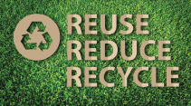
1. Manufacture – production.
2. Solar panel – A plate that can
absorb solar
energy.
3. PV cells – Photo voltic cells
4. Localized – Limited to specific
areas.
5. Universal – found everywhere.
6. Open ocean – areas of ocean that
does not belong to
any country.
7. Depleting – reducing.
8. Conservation – saving for future
use.
9. Sustainable – able to be
maintained.
10. Tertiary – third level.
Do you know
1. Anything becomes a resource only when its use is discovered. The needs of human beings are ever changing. According to the ever changing needs, resources keep changing. Time and Technology are two important factors that determine whether a substance is a resource or not. for example: Sun’s energy to generate electricity was made possible after the invention of solar panels (technology); and the receding of coal and petrol needed an inexhaustible resource (time).
2. Marine yeast have greater potential than the terrestrial yeast. They can be used in baking, brewing, wine, bio-ethanol and pharmaceutical protein production.
3. Tropical rain forests are called the ‘World’s largest Pharmacy’ as 25% of the natural vegetation are medicinal plants. (example) Cinchona.
4. Ambergris is an extract from the sperm whale. A pound (0.454kg) of sweet – smelling ambergris is worth US $63,000 and used in perfume industries.
A, Natural resource |
B, Minerals |
A, International resource |
B, Sustainable development |
A, Reduce, Reuse, Recycle |
B, Air |
A, Non-renewable |
B, Manufacturing |
A, Universal resource |
B, Ambergris |
A, Secondary activities |
B, Forest |
1. Sugarcane is processed to make dash
2. Conservation of resources is dash use of resources.
3. Resources which are confined to certain regions are called dash
4. dash resources are being used in the present.
5. dash resources are the most valuable resources.
6. Collection of resources directly from nature is called dash
1. Renewable resources.
2. Human resources.
3. Individual resources.
4. Tertiary activities
1. What are resources?
2. What are actual resources?
3. Define abiotic resources.
4. What is sustainable development?
1. Differentiate universal and localized resources.
2. Though human beings are natural resources, why are they classified separately?
3. Compare national and international resources.
4. What is the difference between man-made resources and human resources?
5. Write the Gandhian thought on conservation of resources.
1. How are natural resources classified? Explain any three with examples.
2. How can resources be conserved?
3. What is resource planning and why is it necessary?
4. Explain the primary, secondary and tertiary activities.
1. Statement: Solar energy is the best substitute for thermal energy in tropical regions.
Inference 1: Coal and petroleum resources are receding.
Inference 2: Solar energy will never deplete.
Now choose the right answer.
a) Only conclusion 1 follows.
b) Only conclusion 2 follows.
c) Neither 1 nor 2 follows.
d) Both 1 and 2 follow.
2. Statement: If you don’t conserve resources, human race may become extinct.
Inference 1: You need not conserve resources.
Inference 2: You need to conserve resources.
Now choose the right answer.
a) Only conclusion 1 follows.
b) Only conclusion 2 follows.
c) Neither 1 nor 2 follows.
d) Both 1 and 2 follow.
3. Statement: Man switched over to agriculture.
Inference 1 : Food gatherers experienced scarcity of food.
Inference 2: Food gathered was not nutritious.
Now choose the right answer.
a) Only conclusion 1 follows.
b) Only conclusion 2 follows.
c) Neither 1 nor 2 follows.
d) Both 1 and 2 follow.
1. Giving your childhood cycle to your neighbour dash
2. Using a flush that consumes less water dash
3. Melting used plastic to lay roads dash
I) Cross word puzzle.
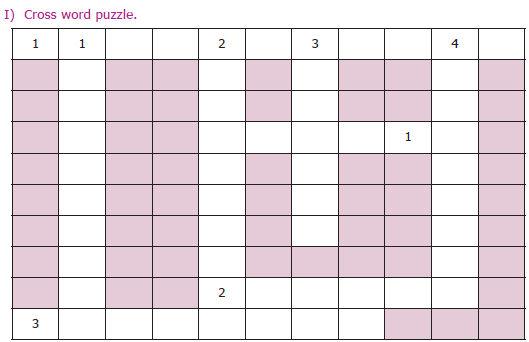
Across left to right
1. A development that balances time.
2. Energy from the sun.
3. All resources that belongs to country.
3. All resources that belongs to country.
Across right to left
1. One of the 3Rs
Down
1. A resource found everywhere.
2. An international resource.
3. A resource provided by nature.
4. A resource restricted to specific areas.
1. Neyveli
2. Bay of Bengal
3. Arabian Sea
4. Forest region of Tamil Nadu
5. Indian Ocean
6. Iron mining in Kanjamalai (Salem)
Serial number 1 |
Picture |
Primary/ secondary/ tertiary |
What activity is this?
|
Region in which it is found |
Serial number 2 |
Picture |
Primary/ secondary/ tertiary |
What activity is this?
|
Region in which it is found
|
Serial number 3 |
Picture |
Primary/ secondary/ tertiary |
What activity is this?
|
Region in which it is found |
Serial number 4 |
Picture |
Primary/ secondary/ tertiary |
What activity is this?
|
Region in which it is found |
1. Observe “Save Energy Day” once in a month at school / class level.
2. Try making wall hangings with waste materials to decorate your school corridors.
3. Find out if there are any industries nearby your school. A field trip may be arranged.
4. Collect pictures based on
a.Fishing b.Hunting
c.Food-gathering d.Forestry
e.Mining f.Agriculture
g.Cattle-rearing h.Lumbering
REFERENCE
Human and economic geography written by Goh Cheng Leong
Internet Resource
https;//www.acciona.com/sustainable development